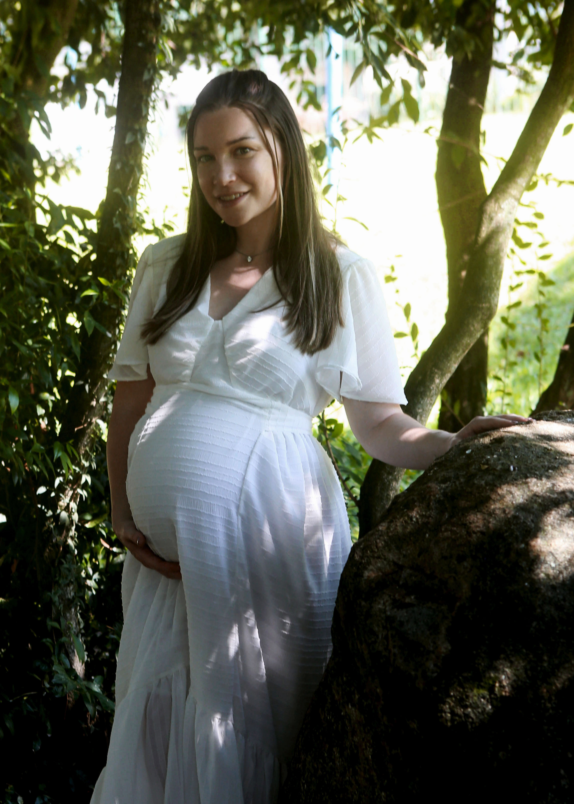

Emily Meer
Product Designer

Summary
I am a product designer with 7 years of experience in UX/UI design for apps and websites, including user research, interaction design, visual design, and UX writing.
From 2017-2022, I was the co-founder of an ed-tech startup that built a language-learning app called Lingua Franca. As the founding designer, I created concepts, wireframes, and high-fidelity designs for the app using tools such as Figma, Photoshop, Illustrator, and InDesign. This work resulted in 5 different activity types organized as lessons within 10 levels.
Currently, I am the product designer for the Fit Body App, and I have been involved in the development of a new dashboard from scratch, as well as the addition of new workout programs, new trainers, and UI updates to current On Demand programs. As the sole designer on this small team, I have become adept at creating and iterating on a product under the pressure of working within a short time span.
Other notable projects include prototyping a landing page and product pages for Vitalura Labs, a supplement company, and Novos Intelectuais, an educational endeavor.
I am currently learning motion design with the intent of widening my skillset and facilitating work and communication within this area.
Education
Coursera | Google UX Design Professional Certificate
- MARCH 2023 - PRESENT, VIRTUAL
Ball State University | BA in Landscape Architecture
- AUGUST 2013 - APRIL 2018, MUNCIE, IN
- RELEVANT COURSES: Environment Design & Planning, Composing Research, Design Communications Media 1 & 2, LA Computer Applications, LA Research
- Completed a capstone project on sustainable communal housing for the elderly, located in Campo Largo, Brazil. The final product included aerial plans, elevations, and perspective drawings.
- Graduated with honors from the Honors College.
Ayn Rand University | Philosophy and Communication
- SEPTEMBER 2020 - PRESENT, VIRTUAL
Work Experience
Product Designer | Fit Body App + Vitalura Labs
- MARCH 2023 - PRESENT
- Sole designer responsible for the creation of wireframes, prototypes, and high-fidelity designs for the Fit Body App to enhance the general layout, functionality, and product flow based on concepts derived from user interviews and experiences.
- Projects of note: A new dashboard, the addition of five new programs, and graphic design updates to the app's website.
- Prototyped a redesign for the Vitalura Labs website, including a new landing page and several new product pages.
- Other roles: graphic design for marketing campaigns, packaging design, copywriting, social media content creator.
Product Designer | Self-Employed
- JUNE 2022 - MARCH 2023
- Provided creative input to help clients conceptualize their products from their users' point of view and applied visual design to realize these ideas and improve their brand identity.
Startup Co-founder, Product Designer | Click
- MARCH 2017 - SEPTEMBER 2022
- Researched, planned, designed, and managed the creation of the main product, a language app called Lingua Franca.
- Managed the work of one designer on the team, to whom I occasionally gave advice regarding technical matters associated with illustration and graphic design principles.
- Other roles: content design, content writing, copywriting, graphic design for marketing campaigns
Skills
- UX/UI design
- App Design
- Website Design
- Rapid Prototyping
- Design Systems
Awards & Certificates
- 2023 Concurso de Ensayos sobre “La Rebelión de Atlas”
- 2022 Concurso de Ensayos sobre “El Manantial”
- 2018 LAF Olmsted Scholar
- 2017 UDALL Runner Up
- 2017 NSEP Boren Scholarship
Learn More